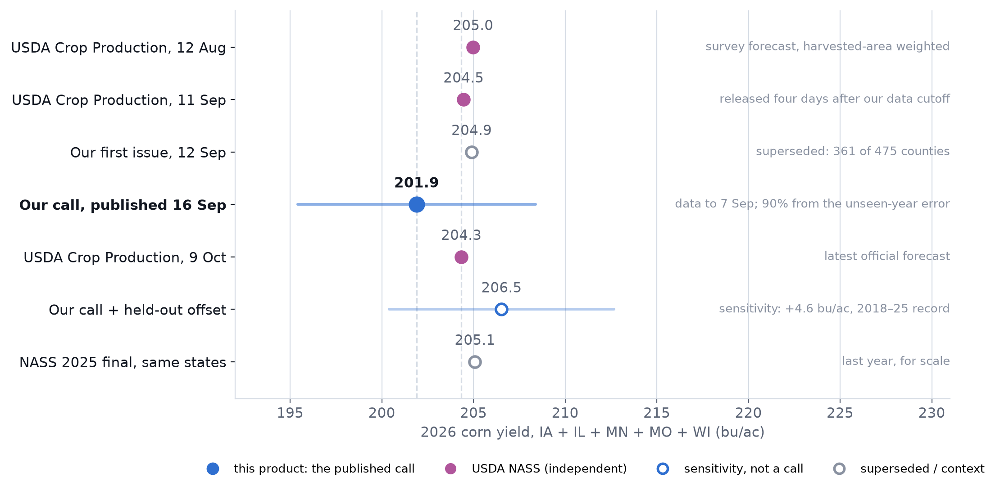
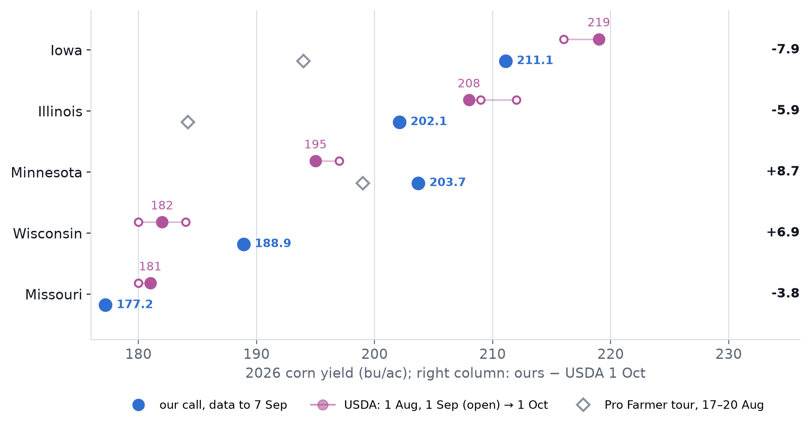
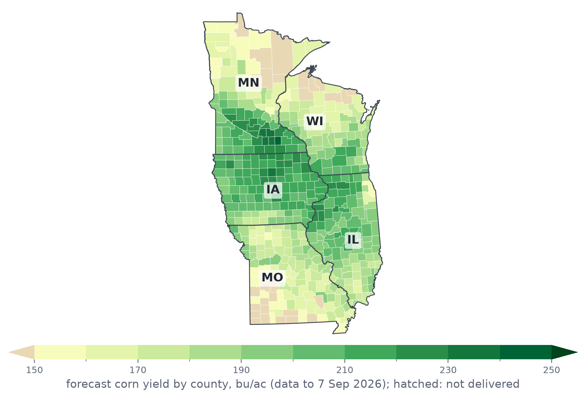
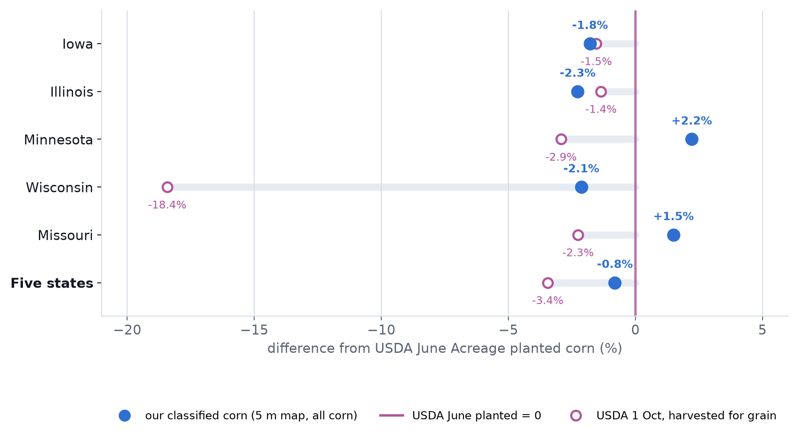
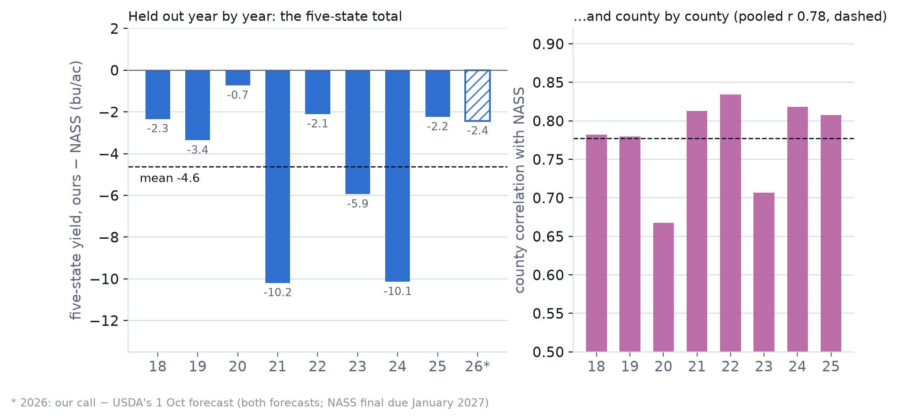

Five-state corn yield · our call
201.9 bu/ac
90% interval · 195.4–208.4 · 12.68 t/ha
Published 16 September and unchanged since — the number USDA’s January final will test. The audit record.
Iowa, Illinois, Minnesota, Missouri and Wisconsin planted 40.0 million acres of corn this year, by USDA’s June survey. Our satellite forecast, published on 16 September with imagery to 7 September, puts their yield at 201.9 bu/ac. USDA’s latest survey forecast for the same states is 204.3. This record sets the two side by side, keeps what each one measures attached, and fixes the test that USDA’s final numbers will settle in January.
±0.07 M · 95%, classification error only
USDA June planted: 40.0 M (−0.8%).
203.6 Mt on our mapped area
USDA 1 Oct: 7.89 bn bu on harvested-for-grain area.
Before comparing the numbers
A satellite field forecast, a survey of farm operators, a crop-tour sample and USDA’s final statistics are all useful. They do not measure the same thing, on the same ground, at the same time.
“The aim is not to decide which number wins. It is to show what each instrument observed, where the evidence aligns, where it pulls apart and what the final statistics will test.”
The headline, with its basis attached
USDA’s three survey forecasts for these states moved only 0.7 bu/ac between August and October. Our published call sits 2.4 bu/ac (1.2%) below the latest. Weighted the way USDA weights it, by harvested area, our five-state yield is 202.1; on our own corn map it is 201.9.

Blue: our published call and its 90% interval. Magenta: USDA’s monthly forecasts, weighted by harvested area from its state tables. Grey: our superseded first issue (12 September, 361 counties, before the yield run covered the five states) and last year’s NASS final for scale. The open blue point is a sensitivity, not a revised call: the published number plus the model’s held-out offset (section 05).
Our five-state yield is within 1.2% of USDA’s October forecast, and our corn map is within 0.8% of USDA’s June planted acres. Both totals came from the same ground in the same week.
USDA’s numbers are survey forecasts and will be revised. Our call was published after USDA’s September report; the forecast uses no 2026 USDA number, but the comparison with August and September is not a blind test. The test is the January final.
Where the evidence pulls apart
State by state the gaps are larger, and they cancel. Our call is 7.9 and 5.9 bu/ac below USDA in Iowa and Illinois, 8.7 and 6.9 above it in Minnesota and Wisconsin, and 3.8 below in Missouri: 6.6 bu/ac on average. Our map ranks Minnesota above Illinois; USDA does not.

Our call (blue) against USDA’s 1 August and 1 September forecasts (open) and its 1 October forecast (filled), and the Pro Farmer Crop Tour’s mid-August samples (grey diamonds; Iowa, Illinois and Minnesota only). The right column is our call minus USDA’s October forecast.
Held out year by year, the model read Illinois low in every season (−17.0 bu/ac on average) and Iowa low in most (−5.4). Minnesota ran −3.7, Wisconsin +1.4, and Missouri swung widely, from −8.5 to +27.1. In 2026 the Illinois gap to USDA (−5.9) is smaller than its record; Minnesota’s (+8.7) runs against it.
Pro Farmer’s route samples of 17–20 August put Iowa at 194.0, Illinois at 184.2 and Minnesota at 199.0 bu/ac. That is yield potential from ear counts, not a harvest estimate. It sits below both USDA and our call in Iowa and Illinois, and between them in Minnesota.
The geography behind the total
The forecast is made for every 10 m pixel and averaged over each county’s corn. Weighted by corn acres, half the crop sits above 206 bu/ac and the middle 80% between 174 and 223. The high ground runs from southern Minnesota, where Dodge, Steele and Waseca counties top the map at 237.2–240.5, through north-central Iowa into northwestern Illinois. The counties below 150 bu/ac hold 0.4% of the corn.

County mean of the 10 m forecast over classified corn. Beige: below 150 bu/ac, mostly counties with little corn. Hatched: St. Louis city, the one county below the delivery threshold. The live map shows the same forecast field by field.
The other half of production
Area is a direct count of the 5 m map’s corn pixels inside county lines; no survey number enters it. Every state is within ±2.3% of USDA’s June planted acres. USDA’s harvested-for-grain area is lower again, most of all in Wisconsin (−18.4%), where much of the corn is cut for silage.

Our classified corn (blue) and USDA’s 1 October harvested-for-grain area (open), each as a difference from USDA’s June planted acres (the line at zero). Our map counts all corn, grain and silage alike.
Our production multiplies our yield by our mapped area, all corn included. On USDA’s harvested-for-grain area the same yield gives 7.80 billion bushels, against USDA’s 7.89: the 1.2% yield gap again. Most of the area difference is Wisconsin silage.
A weekly corn/soybean classifier on 30 m HLS imagery, refined to a 5 m field map and counted inside county lines. The ±0.07 M acre interval is classification error from the map’s error matrix, not sampling error. USDA’s June figure is used only for this comparison.
Eight seasons, each held out in turn
The production recipe was trained eight times, each time with one season held out, and scored on that season against NASS county yields: 2,690 county-years in the five states, 2018–2025, at the 1 September cutoff nearest our 7 September issue. County by county it tracks NASS closely (r = 0.78). In total it comes in low, below NASS in all eight seasons, by 4.6 bu/ac on average (from 0.7 to 10.2).

Left: each held-out season’s five-state yield minus NASS, both averaged over the sampled counties. The hatched bar is 2026’s gap to USDA’s October forecast: a forecast against a forecast, not yet a result. Right: the county correlation with NASS in each season; dashed, pooled over all eight.
County forecasts against NASS county yields, 2018–2025, each season predicted by a model that never saw it.
Scored on 8 September 2026, before USDA’s September report. County RMSE 1.14 t/ha (about 18 bu/ac). The truth here is NASS county yields over the sampled counties, not the NASS state totals.
From observation to supply
Satellite reflectance is observed. The corn map, the yield and its uncertainty are modelled. Showing the steps makes the result easier to question and harder to overstate.
A forecast should leave a record
A reader should be able to retrieve the data cutoff, model version, scope and uncertainty method after the harvest outcome is known. The audit card below is the minimum public record.
What this record adds
Two numbers leave this page: 201.9 bu/ac, the published five-state call, and its 90% interval, 195.4–208.4. USDA’s survey sits at 204.3, inside it. In every held-out season the model has read low. January will tell.